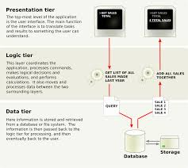

Multitier architecture is a software design pattern that separates an application into distinct layers or tiers, each responsible for specific functions.
Layers
- Presentation Layer: User interface (e.g., web pages, mobile apps).
- Application Layer: Business logic and processing.
- Data Layer: Database and data management.
Benefits
Improved scalability, maintainability, and separation of concerns.